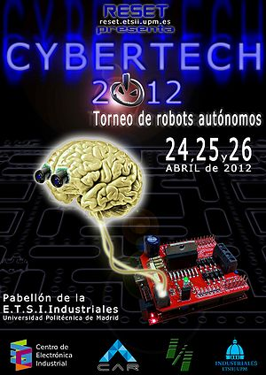
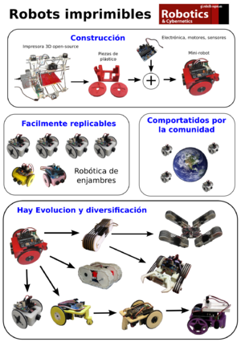
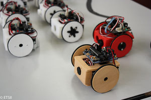
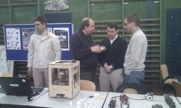
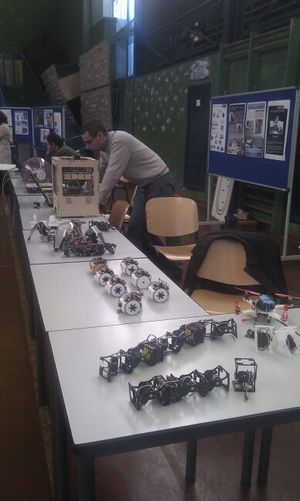

|  220px |


Ficha
- Título: "Printbots: Robots libres e imprimibles"
- Evento: Cybertech
- Organizado por: RESET, Asociación de Robótica de estudiantes de Industriales de la UPM
- Ponente: Juan González
- Actividades:
- Charla de 30 min. de duración
- Demostración de los robots imprimibles durante todo cybertech
- Lugar: Escuela Politécnica Superior de Ingenieros Industriales, UPM
- Fecha: 24-26/Abril/2012
Resúmen


Póster sobre PrintBots (Click para ampliar)
En esta charla se presentarán los robots libres e imprimibles. Que un robot sea libre significa que están disponibles todos sus esquemas para que cualquiera los pueda utilizar, estudiar, modificar, distribuir, fabricar o vender. Esto los hace especialmente indicados para entornos educativos. "Imprimible" significa que se pueden fabricar utilizando una impresora 3D open-source. Estos robots tienen la capacidad de que se pueden compartir fácilmente por la comunidad a través de Internet. Esto hace que mejoren y evolucionen. Se presentará el robot Miniskybot, uno de los primeros robots libres e imprimibles y se analizarán los diseños derivados que han creado a partir de eĺ.
Descargas
Transparencias de la charla
| PrintBots-cybertech.pdf | Transparencias (PDF) |
| PrintBots-cybertech.odp | Fuentes de las transparencias para LibreOffice 3 |
| Slideshare | Transparencias en línea |
Cartel sobre PrintBots
| 2012-cybertech-poster-printbots-A2.svg | Fuentes del póster sobre Printbots. Para Inkscape (SVG) |
| 2012-cybertech-poster-printbots.pdf | Póster en PDF |

Vídeos mostrados durante la charla
- Vídeo 1: Una Prusa en acción. R2 está imprimiendo un cubo de calibración
- Vídeo 2: Jugando con el Miniskybot
- Vídeo 3: Orugator moviéndose sobre piedas
- Vídeo 4: Unitrack subiendo una pendiente
- Vídeo 5: 4Track en acción
- Vídeo 6: Rover en acción
Licencia
| |
Fotos
 (click par ampliar) |
 (click par ampliar) |
|  (click par ampliar) |


Artículos
|
|
|
|
Enlaces
|
|
Proyecto Clone Wars: Construye tu impresora 3D opensource! |
Sobre la charla
- RepRap: Impresoras 3D auto-replicantes
- Makerbot: Empresa Makerbot, que comercializa impresoras 3D open-source
- Thingiverse: El youtube de los objetos
- Skybot: Robot móvil educacional (Libre pero NO imprimible)
- Mini-Skybot: Robot móvil libre e imprimible
- OpenScad: Herramienta libre para diseño de piezas
- Freecad: Herramienta libre de CAD
- Objetos 3D: Objetos imprimibles
- Tarjeta Skycube
- Kicad: Herramienta libre para diseño de circuitos
- Piezas creadas en Plastic Valley UC3M!
- Orugator
- Unitrack
- ASROB: Asociación de Robótica UC3M
- Grupo de impresoras 3D de la asociación de robótica UC3M
- OOML: Object Oriented Mechanics. Mecánica orientada a Objetos
Sobre Cybertech 2012
- Cybertech en la Escuela de Industriales
- Página oficial de cybertech, en RESET
- Vídeo en Antena 3 sobre el Cybertech
Créditos
- Alberto Valero-Gomez, Andres Prieto-Moreno, Mohamed Abderrahim y Juan Gonzalez-Gomez son los autores del artículo: "A New Open Source 3D-printable Mobile Robotic Platform for Education"
- Olalla Bravo es la creadora de la rueda loca del Miniskybot 1.0 y del robot Orugator
- Daniel Gómez es el creador de la pieza para los sensores IR del Miniskybot y del robot Orugator
- Jon Goitia es el creador de los robots Unitrack y F-track
- La impresora MADRE pertenece a la Asociación de Robótica UC3M
Agradecimientos
- A la asociación de robótica RESET, por invitarme a participar dando una charla. ¡Muchas gracias!
- A Jesús Arroyo, por su invitación y toda la ayuda que me prestó. ¡Muchas gracias!
Noicias
- 01/Jun/2012: Primer versión de esta página lista
- 23/Mayo/2012: Comenzada la página